Installing and Configuring LDAP
THANK YOU to Jim Conallen, for the following documentation!!
Est. Time: 15 min.
Note
The original directions for configuring LDAP written my Jim Conallen can be found here.
Introduction
This document describes how to use setup OpenLDAP on a Linux node that is either part of an ICP cluster, or has visibility to and from the cluster. It uses the Docker image siji/openldap:2.4.42 which is a multi-arch image with an OpenLDAP server, and a web based administrative console. This document describes how to install and setup a few users and groups that can then brought into ICP teams.
You can run the LDAP server on any one of the nodes, but I would suggest you run it either on the master or boot node. I choose to run this on a separate stand alone server. All it requires is that docker is installed.
Warning
If you plan in Customizing the cluster access URL you should configure that BEFORE you configure any LDAP connections.
Installation
The VM that will run OpenLDAP must have docker installed. If it does not have visibility to DockerHub to directly pull the image siji/openldap:2.4.42, then you will have to save the image to a file and copy it image from another machine that does with the docker image save and docker image load commands.
To ensure persistence across reboots you will need two dedicated directories on the VM hosting OpenLDAP, one for /etc/ldap/slapd.d and /var/lib/ldap. Create directories in /var/openldap for these with the commands:
mkdir -p /opt/openldap/slapd.d
mkdir -p /opt/openldap/ldap
With the image in the local registry (or if the machine has visibility to DockerHub), run the following command. You can change DOMAIN to match the cluster name and domain of the ICP cluster that you will connect to, but this is option and only makes sense if this ldap is used with only that one cluster.
docker run -d -e DOMAIN=mycluster.icp --net=host --name=openldap \--restart unless-stopped \
-v /opt/openldap/ldap:/var/lib/ldap \
-v /opt/openldap/slapd.d:/etc/ldap/slapd.d \
siji/openldap:2.4.42
This will run OpenLDAP and with the restart option ensure that it runs after reboots.
Note
The command above will run a docker image containing LDAP and set it to automatically restart if the virtual machine is restarted. It also assumes you named your ICP cluster mycluster.icp; if you changed it to something different use that value for the DOMAIN parameter in the command above.
Configuring Users and Groups
With a web browser log into the phpLDAPAdmin page, the address is:
http://[IP Address of LDAP VM]:9580/phpldapadmin
The default user/password is admin/admin.
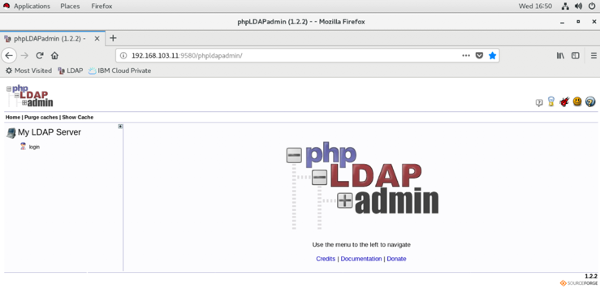
Users
Click on the top level element the tree (dc=mycluster, dc=icp).
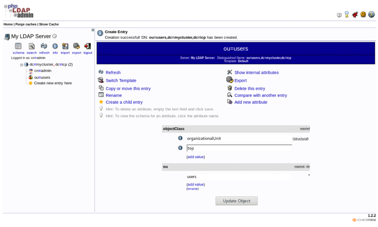
Create a child entry of type organizational unit called users,
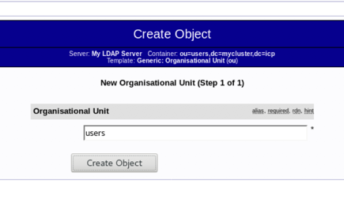
and click confirm.
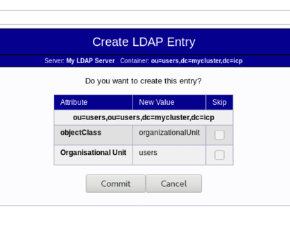
Create a child entry of users, of Default type.
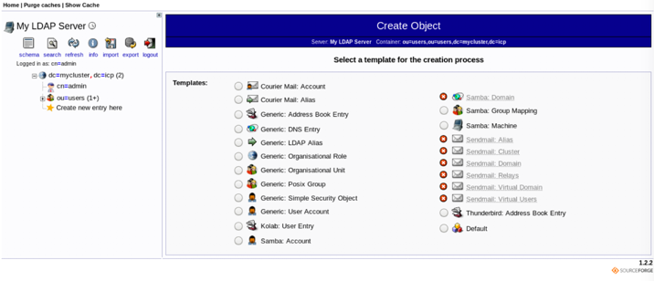
Select inetOrgPerson, organizationalPerson, and person as object classes.
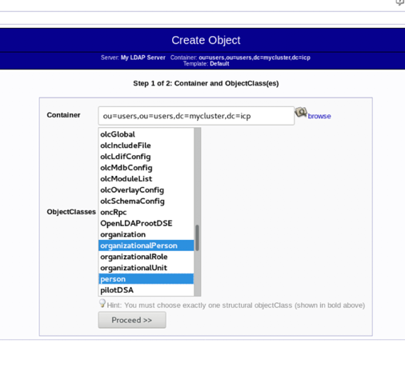
Click Proceed. Then select User Name (uid) for the RDN, and enter in the username for the cn andsn fields. Create one for yourself first, you’ll do this same procedure for all users.
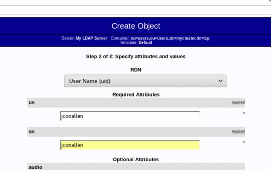
Scroll down and set the Password field, and the User Name field with the value of your username.
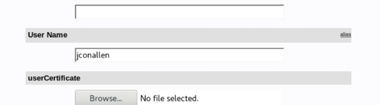
Click Create then click Commit to save the changes.
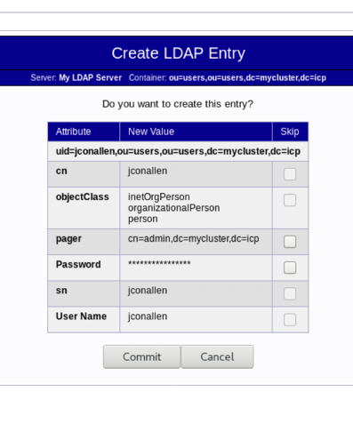
Continue to create as many users as you want. After you have created the users, you need to create at least one group.
Groups
Create a child entry off the top node of type Organisational Unit, call it groups.
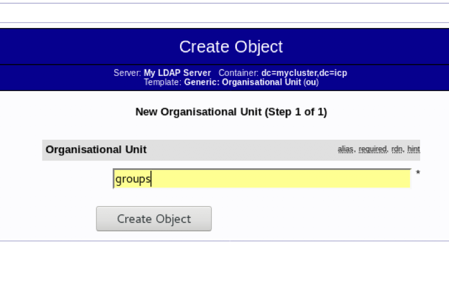
Click Create Object and Commit.
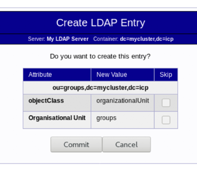
Create a child entry of groups with a Default type. Select the Object Class groupOfUniqueNames, and click Proceed.
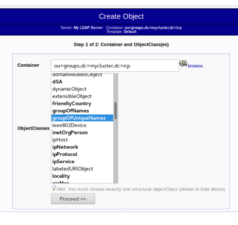
Select cn as the RDN type, and enter the group name users. You must add at least one actual user to this group, choose your user id. The uniqueMember must be of the form;
uid=<username>, ou=<username>, dc=mycluster, dc=icp
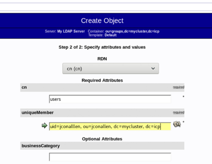
Click Create and Commit.
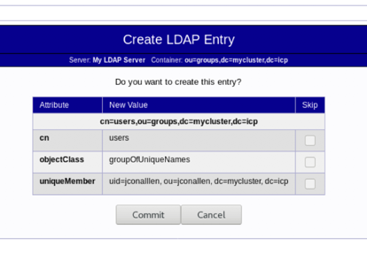
Now you can add the remaining users by clicking the modify group members link.
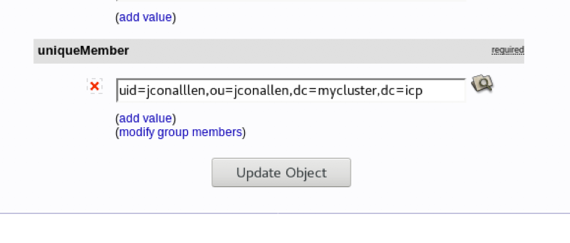
Add the remaining users to the group using the UI, then click Save Changes.
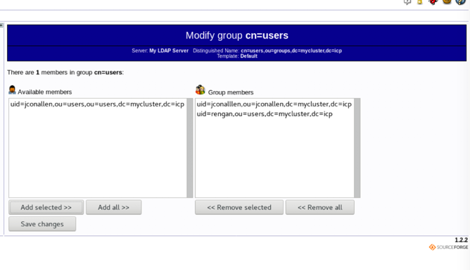
Configure ICP
From the ICP UI, and logged in as the Cluster Administrator, select Manage > Authentication from the main menu, and click on the link to configure authentication. Enter in the following values for the fields:
Name: ldap
Type: Custom
URL: ldap://[IP Address of LDAP VM]:389
Base DN: dc=mycluster, dc=icp
Bind DN: cn=admin, dc=mycluster, dc=icp
Admin password: admin
Warning
The value for admin password needs to be whatever you set as the admin password for your ICP Cluster. The default is admin but if you changed it during your installation use your password here.
The values of dc fields above assume you used mycluster.icp as the value for DOMAIN when you created the LDAP server. If you used other values, then you need to modify the values for dc in these instructions as well. For example, if you set the DOMAIN to davecluster.dwicp then the Base DN would be dc=davecluster, dc=dwicp and the Bind DN would be cn=admin, dc=davecluster, dc=dwicp.
Click the Test Connection button to verify that these are the correct values.
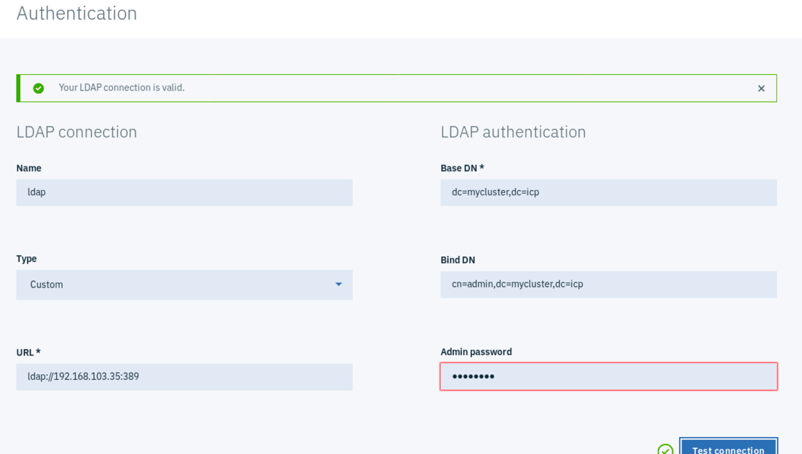
Scroll down and edit the User filter so that it equals: (&(uid=%v)(objectclass=person)). Then click Save.
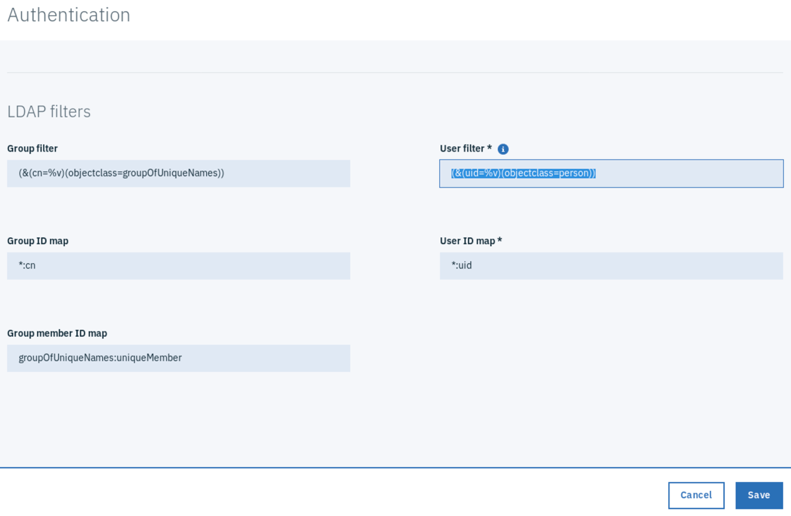
The LDAP server should now be configured with ICP. You can verify by creating a Team.
Create a Team
From the Manage > Teams menu Create a new team. Enter in a name for the team (e.g. developers), and click on the Users selection. Then start typing the name of a user you created in the search field just below. When you find it check it (to select it) and then select the role for this user in the team. If you can find the users you know that the LDAP was configured properly.
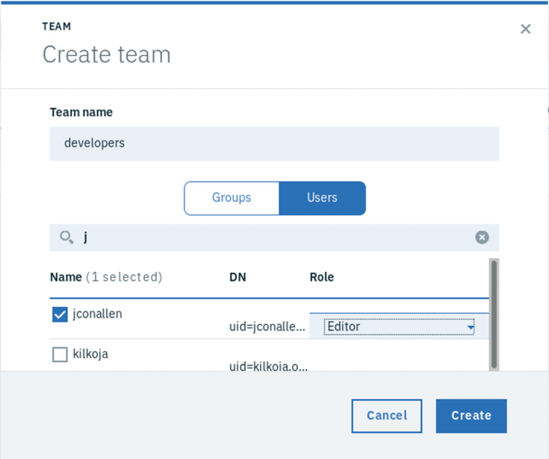
That's it!